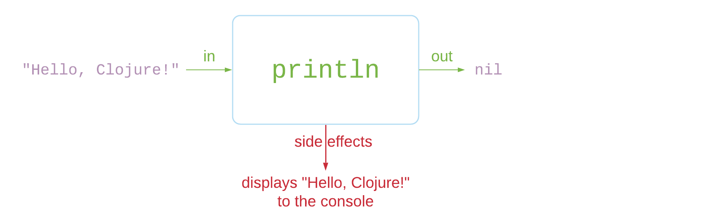

(ns fun.clj
(:require-macros [klipse-clj.macros :refer-macros [dbg]])
(:require
[clojure.string :refer [join upper-case]]
[clojure.test
:refer-macros [deftest is are]]))Clojure made easy
Yehonathan Sharvit
(str (js/Date.))
Who am I?
A pragmatic theorist
A freak of interactivity
Author of Klipse: a client side code evaluator pluggable on any web page
Running a small consulting company
Sparking the joy of Clojure at Cycognito, Audyx and Nextjournal
Yehonathan Sharvit @viebel
Begin with the End in Mind
You are motivated to learn Clojure
You look differently at your existing Software knowledge
You feel you had a fun time
You want to read my book on Clojure 💸

Three+One wishes
I wish I could express myself clearly
I wish I could code in a simple way
I wish I could write (and read) code that is predictable
I wish I could get more wishes
Power of expressions

The lack of power of expressions
We cannot assign the result of an if or a switch statement to a variable.
var a = if (true) { 5 } else {42};We cannot comment out an expression. | The syntax is not uniform: operator, statements, function calls, function definition, classes… |
The power of expressions
| Every part of the language is an expression, with the same structure |
arithmetic operation | boolean operation |
local bindings | variable assignment |
| function call |
The power of expressions - Javascript vs. Clojure
Javascript | Clojure |
| |
| |
| |
| |
The power of expressions - the rules
An expression is enclosed into opening and closing parenthesis:
(),[]or{}First element inside the parentheses is the name of the expression:
def,if,+…Other elements inside the parentheses are the arguments to be passed to the expression, either a primitive or an expression
When one of the arguments is itself an expression, it follows the same syntactic rules (recursively)
(defn foo [x y]
(if (= x (+ y y))
(* x y)
(inc x)))
(foo 42 20)The power of expressions - if expressions
We can assign the result of an if expression into a variable
(def my-mood (if my-num "happy" "sad"))
my-moodThe power of expressions - comments
We can comment out a single expression out of a big piece of code
(defn print-moods [num]
(println "happy")
#_(if (= num 42)
(println "furious")
(println "angry"))
(println "sad"))
(print-moods 42)The power of expressions - macros
We can write code that receives source code and genenerates another code.
Pure functions are helpful
Challenge 1
Write a function that receives a
nameand prints to the console
Hello <name>!You may use the language of your choice.
Hello Javascript
function hello(name) {
console.log(`Hello, ${name}!`);
}
hello('Javascript');Thoughts 🤔
Can you write a unit test?
Can you compose?
Can you cache?
Hello Clojure
We are going to separate:
Computation (concatenation of
"Hello"andname)Side effects (print to the console)
Hello Clojure
We create a function named hello-str that receives name
and "computes" the concatenation of "Hello" and name
(defn hello-str [name]
(str "Hello, " name "!"))The hello function that does the side effect (print) uses hello-str:
(defn hello [name]
(println (hello-str name)))(hello "Clojure")Pure functions vs. side effects
A pure function

A function with side effects

Key idea: separate side effects from computation

The value of pure functions
Testable
Composable
Cachable
Testable
A trivial test case
(deftest test-hello-clojure
(is (= (hello-str "Clojure")
"Hello, Clojure!")))Check
(test-hello-clojure)🤔 Can you test the function you wrote to solve the challenge?
Composable
We can use our functions as building blocks 🧱 for other functions.
We compose as we wish | |
It returns a composed string | |
We print it, later | |
🤔 Can you compose the function you wrote without modifying its code?
Hello worlds
Handle sequences
Let’s handle sequence of names
(map hello-str ["Clojure" "Python" "Javascript" "Java"])Let’s combine the elements of the sequence, into a string | |
We print, later
(println (multiple-hellos ["Clojure" "Python" "Javascript" "Java"]))Cachable
Imagine that string concatenation were a heavy operation. | |
We would like to cache the function
Next time we call it, it returns the result immediately
🤪 It makes no sense to cache a function with side effects! | |
Interlude: A brief history of Functional Programming
1930: Lambda Calculus
Alonzo Church discovers the λ-calculus
Everything is an anonymous function with a single argument
No names in the language - only function argument
Even numbers are expressed as functions
0 := λfλx.x
1 := λfλx.fx
2 := λfλx.f(fx)
1958: LISP
John McCarthy invents LISP
It is the 1st FP language
The data is expressed as S-Expressions:
(1 2 3),(a b (c d))etc…The code is made of S-Expressions:
(+ 1 2 3),(if true 1 42)etc…
1995: Javascript the language of the browser
Brendan Eich is recruited by Netscape to do "scheme in the browser"
Eventually, he invents Javascript
Functions are 1st class citizens
JSON data format is similar to S-Expressions
2000s: Clojure
2007 - Rich Hickey invents Clojure - A practical dialect of LISP on top of JVM
2011 - ClojureScript - Clojure rocks, Javascript Reaches!
2013 - Facebook creates react.js - A functional javascript frontend framework
2015 - Dan Abramov invents redux - A javascript library that imposes FP constraints on a frontend app
Dealing with Data is valuable
The value of values
Challenge 2
Read carefuly the following piece of code and tell me what is the value of x?
You may convert the code to the language of your choice.
const x = 42;
calcSomethingUseful(x);
//xThe value of values
Challenge 3
Read carefuly the following piece of code and tell me what is the value of y?
You may convert the code to the language of your choice.
const arr = [5, 99, 1230];
const z = calcVeryUseful(arr);
const y = arr.length;
//yWelcome immutability

What is immutability?
Immutability means that data collections are treated like values.
Values never change!
In the realm of numbers | In the realm of strings |
In the realm of vectors | In the realm of maps |
The value of immutability

Code is predictable
No "by reference" or "by value" headache
Equality check is fast
Concurrency friendly wihtout locks
Beyond immutability
Atoms
| |
| |
Extend the language with macros
It would be cool to write asynchronous code that looks synchronous
It would be fun to add debugging capabilities
It would be productive to write code that disappears on production
It would be nice to pass data to data manipulation functions sequentially
Custom debugging
(defn complex-stuff [x & forms]
(loop [x x forms forms]
(if forms
(let [form (dbg (first forms))
threaded (list (first form) (first (next form)) x)]
(recur threaded (next forms)))
x)))(complex-stuff 10 [1 2] [4 5])Pipeline instead of wrapping
Wrapping functions become hard to read | Use pipelines |
It’s a macro
(macroexpand '(->>
(range 100)
(map inc)
(filter odd?)
(reduce +)))Macros Internals
Macros Internals
(defn transform [x & forms]
(loop [x x forms forms]
(if forms
(let [form (first forms)
threaded (list (first form) (first (next form)) x)]
(recur threaded (next forms)))
x)))(transform '(range 100)
'(map inc)
'(filter odd?)
'(reduce +))Wishes come true
I wish I could express myself clearly
The power of expressionsI wish I could code in a simple way
Pure functionsI wish I could write (and read) code that is predictable
ImmutabilityI wish I could get more wishes
Macros
Questions